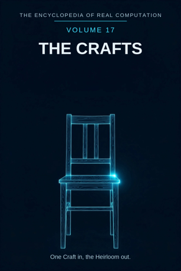

Chron.
The Encyclopedia of Real Computation

One Craft in, the Heirloom out.
Home domain: Technics
One Craft in, the Heirloom out.
◉ A Principle .... Craft ◎ B Purpose ...... Use ◉·◉ A.A Alpha ...... the Maker ◉·◎ A.B Cross ...... the Tool △ X Primitive .... Materials ⚙ Y Protocol ..... Making ⬢ Z Product ...... the Made Thing ◐ i State ........ the Broken ⚖ j Condition .... the Grain ⊞ N Set .......... the Trades ◷ h Time ......... the Seasoning ▣ C Context ...... the Workshop ▦ D Domain ....... the Guild ♥ E Emotion ...... Pride ➤ F Intention .... the Commission ↻ pi Cycle ........ the Season ➔ phi Step ......... the Joint ⚄ e Probability .. the Fit • h-bar Planck ..... the Cut
Σ sigma Summation .. the Work
◈ gamma Scale ...... the Scale Δ delta Change ..... the Repair ⁂ sigma' Options ... the Techniques Ω Omega Answer ..... the Heirloom
Every volume of this encyclopedia does the same work. The Prologue figures the subject whole. Then come twenty-four chapters, one per term, each doing four jobs in plain English: what the term means, where it sits in the computation, how it works on the volume's one running example, and what breaks without it. Then the Data, whole. Then the Crossings. Then the Sum. The running example of this volume is one chair: a single oak board, seasoned, cut, jointed, and sat in - followed from the timber pile to the granddaughter's kitchen.
Craft: the skilled making of useful things, knowledge held in the hands and proved by the using. Use: what a made thing is for - the purpose every cut is answerable to before it is made.
◉ Craft. ◎ Use = the root of Craft: aimed at itself, craft asks
what the thing is for. ◉·◉ the Maker: craft turned on itself becomes a person whose hands know. ◉·◎ the Tool: craft crossed with use - the edge where hand meets purpose. △ Materials = Craft parted over the Trades. ⚙ Making = the function of the Materials, the working applied. ⬢ the Made Thing = Materials times Making, the product, once the Tool has carried it to Use. ◐ the Broken = the root of negative Craft: what fails, splits, and snaps.
⚖ the Grain = the condition, element by element: craft stands
while it works with the grain of each piece. ⊞ the Trades = the set: Carpentry, Smithing, Weaving, Pottery, Masonry, Glasswork.
◷ the Seasoning: craft comes down through time, and its materials
take time before they can be worked at all. ▣ the Workshop: where craft stands. ▦ the Guild = the Trades crossed by the Study.
♥ Pride = the difference a finished thing makes when it lands. ➤ the Commission = the intention that carries a context. ↻ the Season: craft returns with the year - felling, seasoning,
making, mending. ➔ the Joint: one fitted step, stood on.
⚄ the Fit: the odds a joint carries - making holds its tolerances
honestly. • the Cut: the least piece, one cut, irreversible. Σ the Work: all of a maker's output, summed as one. ◈ the Scale: the size of the undertaking. Δ the Repair: craft's own measure of change. ⁂ the Techniques: the spread of ways a thing can be made. Ω the Heirloom: the answer craft resolves into - a made thing that outlives its maker.
IF If Craft to Use, then Materials & Making is the Made Thing, or the Broken while the Grain for the Trades, through the Seasoning, in the Workshop, the Guild, Pride, the Commission, at the Season by the Joint, with the Fit over the Cut - sum the Work, scale the Scale, change the Repair, options the Techniques - therefore the Heirloom.
Stands below, after the chapters, figured whole: the Trades crossed by the Study, twenty-four cells, and the six contexts.
The seven laws, run on this seed. Pythagoras: Craft squared plus Use squared overlays the Workshop squared - the triangle checks in the Where, the If, and the Data identically. Law of cosines: the tilt between craft and use is set by context - at the bench the angle is economy, in the home it is comfort. Binomial: the middle term is the Tool, two times over - use shapes the tool, and the tool reshapes what can be used. AM-GM: Use is the geometric mean between Craft and the One - the single needed thing the making is for. Log law: the Scale of the Made Thing is the Scale of the Materials plus the Scale of the Making - reach adds where work multiplies. Complex modulus: the Broken is counted in the size of the craft; a trade is larger, not smaller, for knowing its failures. Triangle inequality: no route from Materials to Made Thing is shorter than Making; skip it and you hold raw stock, labelled as such in the last term but one.
Craft begins with the plainest inheritance there is - materials and hands - and works them by methods a trade keeps in common. Its product is not the working but the made thing: an object that can be used, and whose using is its audit. The discipline is honest about its failures in a way office work rarely matches: it names the Broken instead of shipping it, it reads the Grain before it cuts, and it keeps its unchosen ways in a labelled room - the Techniques - for the next commission. Its history turns with the seasons: timber felled in winter, seasoned through the year, worked the next, mended a generation later by hands the maker taught. And its finish is the heirloom - not a thing admired behind glass, but a thing still in daily use when its maker is a story. One Craft in, the Heirloom out.
What it means. Craft is the skilled making of useful things: timber into chairs, ore into blades, clay into pots. It is knowledge held in the hands - the oldest technology there is, and the one every other technology still quietly depends on.
Where it sits. Craft is the Principle of this volume, the seed every other term grows from: Use is its root, the Maker its self-product, the Tool its cross.
How it works. Before the chair is a chair, it is craft: somebody, somewhere, knows how boards become seats. Everything in this volume is that knowing, unfolded - one chair followed all the way from the timber pile to daily use, two generations later.
What breaks without it. Every other volume borrows craft's products: the laboratory's bench, the observatory's telescope, the loom the weaving hangs on. Remove the Principle and the other fields keep their ideas and lose their instruments.
What it means. Use is what a made thing is for. A chair is for sitting; a blade is for cutting; a pot is for holding. The purpose is not added after the making - it is the making's orders, received before the first cut.
Where it sits. Use is the Purpose, B = the square root of A: craft aimed at itself extracts the question "what is it for?" And B squared = A: a thing used long and well settles back into craft, teaching the maker what to make next.
How it works. The chair's every dimension is use, written in inches: seat height for a kitchen table, rails where feet rest, a back pitched for a man who leans. Change the use - a child's chair, a chapel bench - and every number moves.
What breaks without it. Craft without use drifts into either waste or mere ornament: things made for nothing fail everyone, including their maker, who cannot say what would count as good.
What it means. The maker is craft embodied: a person in whom the trade's standards have become reflexes - the eye that sees a board's temper, the thumb that tests an edge, the patience that is itself a tool.
Where it sits. The Alpha, A times A: the field turned on itself. The same technique in a beginner's hands and in a maker's differ the way a fact differs in any field - in the company it keeps: near-misses survived, failures remembered, judgement laid down like grain in seasoned wood.
How it works. Hand the oak board to a beginner and he measures it. Hand it to the maker and she reads it first - where it will cup, where it will split, which face wants to be the seat. The reading, not the measuring, is where the chair is decided.
What breaks without it. Unowned craft is a manual nobody can follow: written techniques without a maker to hold them are a library of gestures, and the gestures die in a generation.
What it means. The tool is the interaction term: craft crossed with use, the made thing that makes things. A tool is purpose with a handle - the point where the hand's skill and the job's demands are the same object.
Where it sits. The Cross, A times B, counted twice: use shapes the tool (the saw is toothed for its timber), and the tool reshapes use (the lathe arrives, and round legs become possible, then expected).
How it works. The chair's joints are cut by tools sized to them: the mortise chisel is exactly the tenon's width. And using them teaches back - the maker who has cut a hundred mortises plans the hundred-and-first chair differently. The cross carries force in both directions, as it does in every volume.
What breaks without it. With either factor at zero - skill with no tools stays slow and small; tools with no skill stay idle and rust - the product is zero and nothing is made.
What it means. Materials are the primitive stuff: oak, iron, clay, wool, stone, sand for glass - one material at a time, exact in its nature, combinable in the work. A material makes no claim by itself; it is the clay of this volume, literally in one trade.
Where it sits. X = A times N: the Principle spread across the Set. Every trade receives craft as its own material - carpentry as timber, smithing as iron, pottery as clay.
How it works. The chair begins as one oak board: straight in the grain, seasoned a full year, chosen from the pile for this work. Nothing has been claimed yet except that the board is sound and the sitting is worth making. The hunt is the volume; the clay is this board.
What breaks without it. No primitives, no products: a volume - or a workshop - with nothing elementary in hand has only intentions, and intentions cannot be sat on.
What it means. Making is what may be done to materials: sawing, planing, jointing, forging, throwing, firing. The list is kept by the trade, is public inside it, and is the same for master and apprentice - which is the whole point of a protocol.
Where it sits. Y = f(X), with f the root of Use: the working is governed by the purpose - methods are chosen because they carry toward the using, not merely toward the finishing.
How it works. The board is cut to length, planed true, the mortises chopped in the legs before the tenons are cut to fit them - each step in the trade's order, because the order is the accumulated memory of ten thousand chairs. The working runs ahead of the answer, as good protocol should.
What breaks without it. Materials without a working stay a lumber pile: knowledge of oak is not a chair, any more than knowledge of notes is a song. Making is the field's hands.
What it means. The made thing is the product: materials worked by making and carried across the Tool to Use, arriving as something that can be sat in, eaten from, built with - and judged by the judging it was made for.
Where it sits. Z = X times Y: the product, area-shaped - it has extent exactly as far as its factors reach, and it can always be factored back for audit: which material, which making, whose hands.
How it works. The chair stands: four legs, a seat, a back, a foot-rail. Sit in it. The sitting is the audit no paperwork can replace - the product is checked by the body it was made for, and it passes, or it rocks, in public.
What breaks without it. Making that never finishes is exercise, not craft. The made thing is where effort becomes inheritance: a household gains a chair it did not have, and the gain is real.
What it means. The broken is craft's shadow: the split board, the cracked pot, the weld that lets go. Every trade knows its failure the way every field knows its shadow - and the honest ones count it, study it, and teach from it.
Where it sits. i = the root of negative A: the state of the principle itself, counted in the craft's size by the modulus law. The broken is not outside craft, an embarrassment at the gate; it is one of its measures.
How it works. One of the chair's first legs was cut a fraction short, and the chair rocked - briefly. The rocking taught the maker's eye more than the three true legs did: where to sight, what to check, what a fraction costs. The broken leg is firewood now, and a lesson, in that order.
What breaks without it. A craft that hid its broken would ship it: the failure, unlabelled, goes out the door and fails at the customer's table instead. Naming the shadow is quality control.
What it means. The grain is the way a material wants to be worked: wood splits along it, iron forgives across it, clay remembers every touch. The condition is not advice. It is the material's own terms, and the material always collects.
Where it sits. j, the Condition: the root taken element by element. The chair stands while the grain of each piece is worked with, not against; verification here is granular - this board, this billet, this lump, each read on its own before the cut.
How it works. Plane the seat against the grain and the surface tears, rough as a ploughed field; plane with it and the wood shines like water. The chair's legs are cut so the grain runs their full length - long fibres, long strength.
What breaks without it. Ignore the condition and the material fights the whole way: splits at the mortise, warps by winter, dulls every edge it meets. The condition is the price of the work, printed in the wood itself.
What it means. The trades are craft's divisions: Carpentry, Smithing, Weaving, Pottery, Masonry, Glasswork - the whole principle read six ways, once per great material. Each trade is a world: its own tools, its own failures, its own pride.
Where it sits. N, the Set - the term everything is counted in: materials are A times N, the domain is N crossed by the Study, the sum runs over N. The set is complete as this volume defines it and open underneath; trades are still born where new materials appear.
How it works. The chair is carpentry's - but its screws were smithied, and the cushion on its seat was woven. One object, three trades, no borders crossed illegally: the set is a sorting, not a fence, and the crossings are where households get furnished.
What breaks without it. Unsorted craft is a heap of tricks: all useful, none findable, each generation re-inventing the joint it could not locate in the pile.
What it means. Seasoning is craft's time: green wood drying to stability, clay resting, iron cooling at its own pace. Materials keep their own calendars, and craft that respects them inherits the strength; craft that hurries pays in warps and cracks.
Where it sits. h, Time: the passage the whole figure moves through. In this volume time is not a backdrop but an ingredient: a year of the chair's making was spent doing nothing to it at all, on purpose, in a dry shed.
How it works. The oak board seasoned a full year before the first cut. Had it been worked green, the seat would have cupped by winter and the joints loosened by spring - the failure scheduled in advance by impatience. The seasoned chair sits level decades later.
What breaks without it. Craft without its time is joinery against the calendar: everything made, everything failing on schedule, and no one able to say why the old work outlasts the new.
What it means. The workshop is where craft stands: bench, tool-wall, north light, the floor swept to show what fell. It is not scenery. It is the standing-place that decides what can be made here, at what cost, to what standard.
Where it sits. C, the Context, first of the setting terms: contexts transform the domain (the table stands in the Data), and the difference a context makes is measured by Pride, the next part's first term.
How it works. The chair was made in a fitted workshop, and it shows in its tolerances. The same chair attempted in a field, with borrowed tools, is possible - chairs have been made worse placed - but its company changes, its cost changes, and its finish carries the place in it.
What breaks without it. Context-free craft is a romance told by people who have never looked for a clamp. Real making stands somewhere, with what is at hand, or it does not stand at all.
What it means. The guild is craft's whole territory: the trades crossed by the study - every trade in its four movements, from the question it asks its material to the teaching it hands on. The full table stands in the Data, twenty-four cells, every one figured.
Where it sits. D = N crossed by R: the set by the study. A trade becomes territory only when the study moves across it; the guild is a crossing, never a list - and a standard, kept in common, so that any maker's joint can be read by any other.
How it works. The chair's mortise and tenon are guild joints: standard, named, taught. A carpenter in the next county could repair this chair blindfold, because the domain is shared ground, not private invention.
What breaks without it. Trades without a guild are six solitudes, each re-deriving the dovetail in private notation and dying with its tricks unrecorded.
What it means. Pride is the difference a made thing makes when it lands, measured the maker's way: the hand run along a finished seat, the small silence before the thing is handed over. Its negative is shame at shoddy work - the same instrument, reading the other direction, and just as necessary.
Where it sits. E, Emotion: the difference between contexts, C1 minus C0. In the workshop the chair is work; carried into the home it is furniture, company, a place at the table - and the size of that change is this term.
How it works. The maker does not sign the chair. She sits in it once, herself, in the workshop, before it goes - the landing tested on the one body that knows every joint in it. The quiet of that sitting is pride, measured.
What breaks without it. Two chairs can pass the same inspection and differ in everything that matters: one was made to be handed over with pride, one to be got rid of. A craft that cannot feel the difference keeps both standards and slowly teaches neither.
What it means. The commission is craft's intention: making aimed at a named use and a named user. Somebody asks; somebody makes; the asking shapes the thing as surely as the saw does. It is the most personal move in this volume and the one that makes its products portable between lives.
Where it sits. F, Intention: the operator that carries contexts - C1 = C0 + F. Apply a commission and the same domain becomes a home's furnishing, a market's stock, a site's structure. What survives the carrying is fitness; what is shed is only generality.
How it works. The chair was commissioned by a tall grandfather for his own kitchen table, and his measure is in it: seat higher than standard, back pitched for his lean. A stranger finds it oddly comfortable and oddly tall - the intention, still legible in the wood, fifty years on.
What breaks without it. Uncommissioned making scatters into stock nobody asked for and heirlooms nobody inherits. The commission is why this chair and not another, why it was kept, and why it was mended instead of replaced.
What it means. The season is craft's cycle, and it turns twice: the year's round - winter felling, slow seasoning, the making months, the mending months - and the maker's round: apprentice, journeyman, master, teacher. The field's gait is a wheel, not a road.
Where it sits. pi, the Cycle: the loop the figure runs, turning by steps. The season is also the trade's memory policy - skills are re-met at every turn of a maker's life, and the re-meeting is where competence deepens into judgement.
How it works. The chair was two seasons old before it was begun: felled one winter, seasoned through the year, worked the next. And the hands that made it were on their own turn of the wheel - a journeyman's hands, supervised by a master who once cut the same joints badly, in the same months, decades before.
What breaks without it. A craft out of season fights its materials and its markets at once: green timber, hurried drying, apprentices graduated before their joints hold. The cycle is the agreement machinery between the material's time and the maker's.
What it means. The joint is the step of this volume: one fitted connection, completed, before the next is begun. A chair is not made; it is jointed - six, ten, fourteen connections in sequence, each sized to a single sitting's work and checkable on its own.
Where it sits. phi, the Step: the advance at the cycle's turn. In the grammar, the cycle turns by the step - at the Season by the Joint. Too small a step and the work drowns in fittings; too large and the fit cannot be checked, and an uncheckable joint is a hope, not a step.
How it works. The back legs first: mortise chopped, tenon cut, dry-fitted, struck apart, glued, pinned. Then the seat rails. Then the seat. At every stage the half-chair can be sat on carefully and judged - the step is where the checking lives.
What breaks without it. Making delivered as a single gesture - the whole chair attempted at once, glue everywhere - produces the workshop's saddest object: the nearly chair, wobbling into the firewood pile. Joints are how complexity stays buildable.
What it means. The fit is the odds a connection carries: how truly the tenon meets the mortise, the lid the pot, the door its frame. Craft prints its tolerances on the work itself - too tight splits, too loose rattles, and the band between is this term.
Where it sits. e, Probability: with the Fit over the Cut - every least act of this volume carries its odds beside it. The commission's satisfaction and the heirloom's survival are both, in the end, this number compounded over every joint.
How it works. The chair's tenons are pared a shaving at a time and tried after each paring. The last try slides home with hand pressure and a sound like a sigh - the fit, announced. A chair fitted so does not creak at year one or year twenty.
What breaks without it. Without measured fit, craft is luck: sometimes a chair, sometimes firewood, with no way to say which beforehand - and no way to teach the difference, either.
What it means. The cut is the least piece of craft: one pass of the saw, one strike of the chisel - the smallest act of making, and the only irreversible one. You can re-plane a surface; you cannot uncut a board. Everything in this volume is cuts and their consequences, all the way down.
Where it sits. h-bar, the Planck term: the smallest resolution of the figure. The Sum of this volume is taken at the cut's grain - Omega's limit as the least act shrinks: the Work is defined over cuts, and fits between cuts, all the way down.
How it works. The board's first cut decided the chair's length forever; there is no later step that can lend it back an inch. Measure twice, cut once is not a proverb in this volume - it is the liturgy of the least piece, spoken at exactly the right moment, every time.
What breaks without it. No least act, no accountability: errors could hide between steps, in the blur. The grid of every volume stands on there being a smallest piece to point at.
What it means. The work is craft summed: all of a maker's - or a guild's - output read as one body with one standard. A failure in any piece is the whole work's emergency; a signature style across fifty pieces is the sum announcing itself.
Where it sits. sigma, Summation: the total taken over the Set, whole, every trade, none sampled. It is the inverse of the parting that made Materials - the field breathes out into things and in into one work.
How it works. The chair joins a table, a bench, and a cradle from the same hands, spread across three households and fifty years - recognisably one work, and still being audited by use every day. The sum is a discipline before it is a count.
What breaks without it. Unsummed craft is piecework without a name: nothing accumulates into a tradition, a reputation, or a standard the next maker can be held to.
What it means. The scale is how big an undertaking is, in reach: one chair, a set of six, a hall of two hundred benches, a roof over a town. Scale is a measure, not a ranking - the small sound thing outranks the large rotten one at every setting.
Where it sits. gamma, Scale: the translator of the figure. By the log law, the scale of a product is the sum of the scales - the made thing's reach equals the reach of its materials plus the reach of its making, which is why plain materials, deeply worked, furnish cathedrals.
How it works. Scale the chair up for a giants' hall and it is not the same chair with bigger numbers: rails thicken out of proportion, joints deepen, the foot-rail becomes a beam. Scale is designed, not assumed - the maker re-derives the chair at every size, and the example proves it by breaking if she doesn't.
What breaks without it. Read at one magnification, a craft overbuilds toys and underbuilds bridges: stools fit for statues, tables that fold under soup. Scale is how the field tells its pebbles from its timbers.
What it means. The repair is craft's own measure of change: the made thing mended - a joint re-glued, a leg re-footed, a handle re-wedged - and the trade itself revised, one method quietly replaced by a better as the failures teach. It earns its place as this volume's delta twice over.
Where it sits. delta, Change: applied in the closing run after the sum and the scale are known - change read in full view of the whole. A repair done without the whole in view is a patch; a repair done with it is the design, continued by other means.
How it works. Twenty years on, the chair's back joint loosened. The maker's apprentice - by then a maker - knocked it apart, cleaned the old glue, re-glued and pinned it in an afternoon. The chair is not the original chair diminished; it is the original design, kept. Repair is the second half of making.
What breaks without it. A craft without its change-term makes disposable things, and the world fills with the almost-good, landfilled at the first looseness. Repair is why "old" and "sound" so often arrive in the same sentence.
What it means. The techniques are craft's open spread: for every joint a dovetail, a dowel, a screw, a lashing - ways believed sound, each with its cost and its odds, not all of them chosen. They are printed in this volume as options, not orders: the spread of what the field may do next.
Where it sits. sigma-prime, the Options: last before the Answer, by the book's discipline. No answer in this encyclopedia is read until its spread has been shown; a chair printed without its unchosen joints looks more inevitable than it was.
How it works. For the chair's seat, three techniques stood open: a solid board, liable to cup; a framed panel, slower and stable; a woven seat, light and repairable. The panel was chosen, and the reasons recorded. The unchosen two are not waste - they are the volume's capital, waiting for the next commission's weather.
What breaks without it. Hide the spread and the field presents itself as one rigid way - a catechism where a workshop should be. The techniques are craft's next century, kept in plain sight.
What it means. The heirloom is what craft resolves into: a made thing that outlives its maker and its first use, and goes on being used - not preserved from life but proved by it. It is the narrowest kind of permanence and the warmest: it does not expire, and it is sat in daily.
Where it sits. Omega, the Answer: the limit of the whole figure, and its door back - the heirloom poses the next commission (a table to match it, a chair for the other side), and the next commission roots the next making. The volume closes where the field reopens.
How it works. The chair, fifty years on: in a granddaughter's kitchen, re-glued once, its seat polished by two generations of breakfasts, still level, still silent. A young maker visiting runs a hand under the seat rail and reads the joints like a letter. The board's whole story - forest, seasoning, bench, table - resolved into an object that teaches by existing.
What breaks without it. Without a resolution, the computation turns and never lands: materials gathered, making run, joints fitted - and no point at which the field may say "this much was made well" and hand it on. One Craft in, the Heirloom out.
The Study runs in four movements: the QUESTION the trade asks of its material, the WORK it settles, the KNOW-HOW it reaches, the TEACHING it hands on.
CARPENTRY .. Question: the Board - Work: the Chair - Know-How: the Grain Read Right - Teaching: the First Box SMITHING ... Question: the Ore - Work: the Blade - Know-How: the Heat Judged - Teaching: the First Nail
WEAVING .... Question: the Fibre - Work: the Cloth -
Know-How: the Tension Kept - Teaching: the First Band
POTTERY .... Question: the Clay - Work: the Pot -
Know-How: the Wheel Centred - Teaching: the First Cup
MASONRY .... Question: the Stone - Work: the Wall -
Know-How: the Level Held - Teaching: the First Course GLASSWORK .. Question: the Sand - Work: the Vessel - Know-How: the Breath Timed - Teaching: the First Bead
THE WORKSHOP (base) ... Emotion Pride, Intention the Commission gives THE GUILD.
THE HOME .............. Emotion Welcome, Intention Keeping
gives THE FURNISHING.
THE MARKET ............ Emotion Trust, Intention Selling
gives THE TRADE.
THE SITE .............. Emotion Urgency, Intention Building
gives THE STRUCTURE.
THE SCHOOL ............ Emotion Patience, Intention Teaching
gives THE APPRENTICESHIP.
THE YEARS ............. Emotion Reverence, Intention Preserving
gives THE HEIRLOOM ITSELF.
This volume's roads to its siblings. To VOLUME 1: the Crafts stand in the Book's Fields chapter, whose matrix row already names this volume's gait - the Material, the Made Thing, the Know-How, the Apprenticeship. To VOLUME 6 (Earth Science): every material here is that volume's survey first - timber, ore, clay, stone, sand. To VOLUME 4 (Physics): the lever, the wedge, and the kiln's heat are that volume's laws lent to the hand. To VOLUME 15 (Art): a made thing, beheld, crosses the border - the chair is used for fifty years and then, one day, simply looked at, and both volumes claim it honestly. To VOLUME 11 (Society): the Guild is an institution, counted in that volume among the bonds that hold a town together. Every term of this volume holds an address on the great grid; the index of them stands in Volume 18.
THE TALLY LANE: 6 trades - 24 domain cells - 6 contexts - 24 chapters - 1 running example, made entire. THE SIGMA LANE: read whole, the volume sums to +1: one craft, entire, its broken counted and its spread shown.
ITS OPEN QUESTIONS (sigma-prime, carried to Volume 18): whether techniques lost with their last makers can be recovered from the things they left behind - whether machine making can hold the Fit that hands hold - which materials the coming century will still season - and whose work the second century of a made thing is: the maker's, or the keeper's.
One Craft in, the Heirloom out.
ADDRESS INDEX: this volume's terms stand at the Technics home domain of the great grid; full addresses in Volume 18. GLOSSARY: grain - the way a material wants to be worked. joint - one fitted connection, completed before the next is begun. seasoning - a material's own time, respected. commission - a making aimed at a named use and a named user. fit - the odds a connection carries. ICON TABLE: stands at the front of this volume, and of every volume, identical.